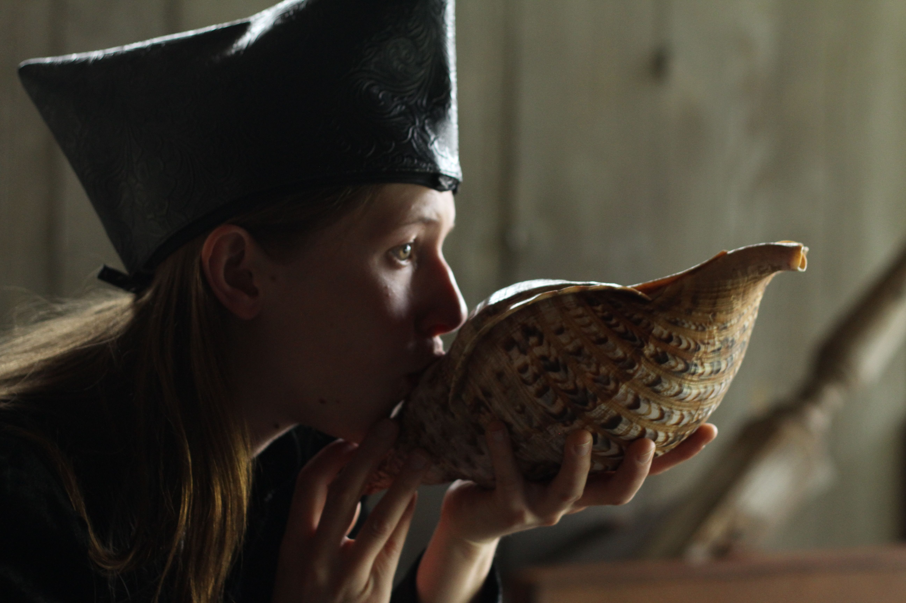

Clews to the Unrepresentable,
the Impossible
Progeny of a white bull and Queen Pasiphaë, the fabled Minotaur is a creature without category, a haunting threat, a provocation. At once singular and composite, it is ultimately unrepresentable.

The Minotaur Trilogy takes its imagery from two myths. It brings these into coincidence, lifting each in pieces from the realms of cultural history, lifting each out of linear time and narrative defense. One myth concerns the lost music for Claudio Monteverdi’s opera L’Arianna. Except for the exalted lamento, L’Arianna is unknowable in its scored parts, yet remains a touchstone in the history of seventeenth-century opera, renowned for the splendour of its staging in 1608. The second myth concerns material traditionally ‘proper’ to opera, that of ancient gods, goddesses and heroes from the poetic heritage of the classical world.
The three parts of The Minotaur Trilogy implode into spaces premised upon the existence of the Minotaur, Ovid’s ‘part man and part bull’. The implosion, this bursting inward, is a kind of archaeological process of gathering, arranging and elevating fragments, sometimes holding them up to the light, literally, but a process of synthesis rather than analysis. We witness Monteverdi amongst the characters who divide the task of this archaeological enquiry; who share the role of orchestrating rich particulars, and abstracting them into the ritual of performance — the ritual by which we might recognise the unrepresentable.
The places evoked and explored by The Minotaur Trilogy are settings in which unutterable deeds have been done. In the manner of tragedy, each of these deeds is a source of suffering, loss, potential transformation. Hence Part One, ‘Minotaur The Island’: a place inhabited by the monstrous child of perverse love, or impossible love — so the island of this love, desolate and forbidding. Let the island be Naxos, too: the island on which Theseus abandoned Ariadne, the setting for Scene 6 of L’Arianna, which culminated in Ariadne’s lament. In a letter of 1620, Monteverdi described this music as ‘the most essential part’ of his opera.
Hence Part Two, ‘Minotaur The Labyrinth’: a place of intricate, mystifying design, though constructed by a skilled craftsman, not a god. Made to conceal the Minotaur — to try to consign it to oblivion. The Minotaur’s prison and slaying-place. Akin to the creaking, submerged darkness of a ship’s hold that nurtures vermin; that permits the stowaway to elude capture, and to sleep — though every lucid dream may be a nightmare. The labyrinth is also the path trodden by those who are grieving, lit now and then by flashes of insight.
Hence Part Three, ‘Minotaur The Boats’: the boats of betrayal, by which Theseus deserted Ariadne — she who had helped him devise an escape from the labyrinth. The boats on which Theseus’s failure to raise a white sail prompted the suicide of his father, King Ægeus. Boats turned toward the future of survival, which involves forgetting and fabrication. Or the boats in formation at the beginning of the voyage into war, or love, the crew an omniscient chorus in the black of mourning.
Inside The Salon at the Melbourne Recital Centre, free of a fixed proscenium, the audience forms the landscape in which The Minotaur Trilogy takes place. Naturally this terrain, locus of collective memory, reverberates with each foray into the symbolic realm.
‘After great pain a formal feeling comes —’ … Emily Dickinson. But as every artist knows, an expression of great pain takes power from a formal structure. The structure can seem comparatively open, such as that of the recitative composed by Monteverdi for Ariadne’s lament, set forth on a stave so as to render Italian rhythms of speech with dramatic precision.
The three scores for The Minotaur Trilogy feature watercolour paintings in which white space abounds. They have an appearance of transparent texture, yet as a compositional language these pictures prove as exacting as notated recitative. A restricted palette — mostly shades of blue and grey-black — focuses attention on the chromaticism and faint lines of narrow washes. The scores also include written instructions, photographic tableaux, lists, literary quotations, and references to other paintings, constituting an integrated vision for the opera, in which instrumentation and sonic gesture, choreography, costuming, props and design are inseparable.
Together with the figures of Dædalus and his son Icarus, the Minotaur signifies the risks inherent to any creative act, including the act of interpretation. In the Prologue to The Minotaur Trilogy, Venus speaks of ‘the weighted calculation of every interaction’. By this line she points out the opera’s aesthetic austerity and rigorous formalism. She also highlights the nature of the performers’ discipline.
The dedicated work of the ensemble involves, first and foremost, attunement to contingency: as the score of Part One acknowledges, ‘certain stage actions, costumes, words, sounds, objects may not be possible. It is best to concede this. Then to continue to form relationships between what is and what is not possible’. The atmosphere becomes taut, as when clouds are spreading at a great height. The performers’ concentration fosters in the audience an intensification of perception. We become aware of the fragility of thought and sense impressions, and of transcending this fragility from moment to moment. The effect can be visceral, strangely euphoric.
It elicits an intuitive desire to keep following the elusive clew — that is, the skein of Ariadne’s thread, the origin of our word ‘clue’. Through The Minotaur Trilogy, the skein is before all else a thread of listening, audible through the whole body, tightly wound at times into a single note that is beautifully, dangerously suspended, like a smoke signal from a windless rise.
Cynthia Troup, October 2012
Programme essay for The Minotaur Trilogy, Chamber Made Opera & Melbourne Recital Centre
in association with Melbourne Festival, 18–21 October 2012.
Reproduced with permission.